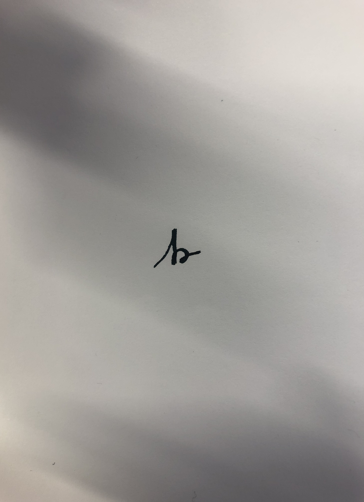

Bartosz Maciej Zawora
University of Warsaw, Faculty of Physics,
Department of Mathematical Methods in Physics
- b.zawora@uw.edu.pl
bzawora@cft.edu.pl - web page
- bmzawora.github.io
- ORCID code
- Other links
-
Google Scholar
ResearchGate
arxiv.org
 0000-0003-4160-1411
0000-0003-4160-1411■ Research
My PhD advisors: Javier de Lucas Araujo and Xavier Rivas .
List of publications:
- X. Rivas, N. Román-Roy, B.M. Zawora, "Symmetries and Noether's theorem for multicontact field theories". Preprint arxiv: 2311.15035
- L. Colombo, J. de Lucas, X. Rivas, B.M. Zawora, "An energy-momentum method for ordinary differential equations with an underlying k-polysymplectic manifold". J. Nonlin. Sci. 3542, 2025. arxiv: 2311.15035 doi: 10.1007/s00332-025-10135-w
- J. de Lucas, A. Maskalaniec, B.M. Zawora, "Cosymplectic geometry, reductions, and energy–momentum methods with applications". J. Nonlin. Math. Phys. 3164, 2024. arxiv: 2302.05827v2 doi: 10.1007/s44198-024-00225-w
- J. de Lucas, X. Rivas, S. Vilariño, B.M. Zawora, "On k-polycosymplectic Marsden–Weinstein reductions". J. Geom. Phys. 191:104899, 2023. arxiv: 2302.09037 doi: 10.1016/j.geomphys.2023.104899
- C. Gonera, J.Gonera, J. de Lucas, W. Szczęsek, B.M. Zawora, "More on superintegrable models on space of constant curvature". Regular and Chaotic Dynamics 27:561–571, 2022.
- J. de Lucas, B.M. Zawora, "A time–dependent energy–momentum method". J. Geom. Phys. 170:104364, 2021. arxiv: 2009.08199 doi: 10.1016/j.geomphys.2021.104364
Collaborators:
- Leonardo Colombo
- Cezary Gonera
- Joanna Gonera
- Manuel de León
- Adam Maskalaniec
- Javier de Lucas
- Asier López-Gordón
- Xavier Rivas
- Narciso Román-Roy
- Wioletta Szczęsek
- Silvia Vilariño